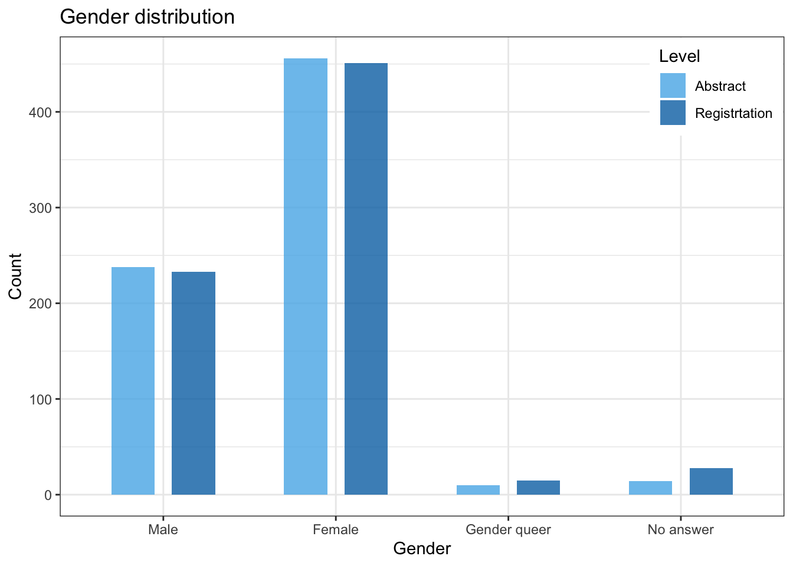

2 Abstract submission and registration
During abstract submission and congress registration, people were asked to provide us with information on their social identity. Here, we provide a summary of the social identities who submitted an abstract and/or attended the congress (abstract submissions are not reported in the manuscript though).
2.1 Abstract submission
There were a total of 729 abstract submissions, of which the majority used she/her pronouns (hereafter referred to as “women”) (456 / 729). (456 / 729) used he/him pronouns (hereafter referred to as “men”), whereas 10 used she/them, he/them, or they/them pronouns (hereafter referred to as “gender queer”).
A total of 59 nationalities were represented among those who submitted an abstract. The majority of the abstract submitters originated from Europe (504/729), followed by Asia (101/729), North America (64/729), South America (21/729), Oceania (20/729) and lastly Africa (8/729). Out of all who submitted an abstract, 0 were affiliated with another country than their nationality (Expat status).
2.2 Registration
There were a total of 727 registrations, the majority of which were submitted by women (451 / 727). 233 registrants were men, 15 registrants identified as gender queer.
A total of 59 nationalities were represented among those who registered. The majority of registrations originated from Europe (481/727), followed by Asia (85/727), North America (48/727), Oceania (20/727), South America (18/727), and Africa (5/727).
2.3 Figures
3 Map for Main Figure
3.1 Nationality data
3.1.1 Continent and country representation
A total of 59 nationalities were represented.
| Continent | Countries | Participation |
|---|---|---|
| Africa | 5 | 5 |
| Asia | 16 | 85 |
| Europe | 27 | 482 |
| North America | 4 | 48 |
| Oceania | 2 | 20 |
| South America | 4 | 18 |
Representation pie chart

Algeria Argentina Australia Austria Azerbaijan
1 1 17 24 1
Bangladesh Belarus Belgium Brazil Canada
2 1 9 8 13
China Colombia Costa Rica Croatia Cyprus
8 6 2 7 1
Czech Republic Denmark Ecuador Finland France
9 8 3 10 43
Gambia Germany Greece Hong Kong Hungary
1 166 5 2 10
India Iran Ireland Israel Italy
41 2 4 3 33
Japan Lebanon Luxembourg Mauritius Mexico
10 1 1 1 5
Montenegro Netherlands New Zealand Nigeria Norway
1 17 3 1 1
Pakistan Poland Portugal Russia Serbia
1 4 14 1 1
Singapore Slovenia Spain Sri Lanka Sweden
1 2 21 2 3
Switzerland Taiwan Thailand Turkey Uganda
20 4 2 4 1
UK Ukraine USA
66 1 28 3.2 Map
Now, we can build our map.